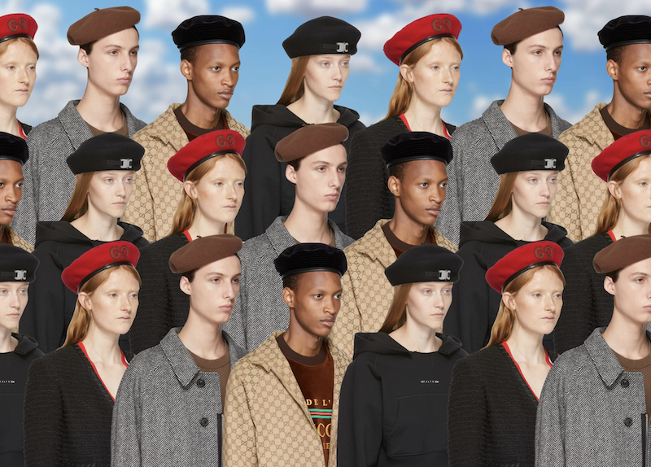

The Amorphous Logic of the Beret
What Do 90s It-Girls, History’s Most Revered Militants, and Pablo Picasso Have in Common?

By Maxwell Neely-Cohen
Cocked on her head like a dark halo, Bonnie Parker wears a black beret. She’s holding a shotgun, and mock reaching for a pistol from her lover Clyde Barrow’s belt. On April 13th, 1933, Texas police officers raided a garage apartment, looking for bootleggers. Instead, they ran into Bonnie and Clyde’s outlaw gang. After a gunfight and the gang’s escape, the police found an undeveloped roll of film. In another shot from this roll, Bonnie leans with her arm and leg against their stolen car, pistol in hand, smoking a cigar. These photos would grace the front page of every newspaper in the country, elevating the couple—and Bonnie’s beret—to celebrity status in the brief period before their violent end.
In the 1967 film version of the bank robbing couple’s life, Faye Dunaway wears a beret throughout, pairing it with all manner of blazers, knits, patterns, bandannas, and firearms. The looks are instantly recognizable, and would be replicated in hundreds of fashion editorials over the 70s, 80s, and 90s, alongside aggressively marketed visions of aspirational French style. Generations of ads told American women: wear a beret to attain that coveted French ease—a version of beauty couched in contradictory equal parts of laziness, thinness, perfection, attention, mystery, and je ne sais quoi.
Even now, berets are seen on the runways of Lemaire, Chanel, and Gucci, channeling the aspirational aloof of French fashion. A beret has no natural styling, no set outfit for which they are the prime accessory. Symbolically loose, they can be successfully paired with suits and t-shirts, greyscales or pastels, patterns or solids. Pulled back on the head, they feel relaxed. Pulled forward, militant. The beret is so amorphous, so all-purpose, any universal theory of the hat would be insufficient, involving a stretch in logic too cute or crude to hold any wisdom. The hat speaks for nothing but its epidemiology, how easily a symbol can spread, be reappropriated, taken and used in a new way.
Harry Styles wears a blue “Ladies Who Lunch” feathered-and-veiled Margiela beret in a shoot by Ryan McGinley for Rolling Stone. Ingrid Bergman wears a beret in the flashback to Paris life in Casablanca, Marilyn Monroe wears one in Gentlemen Prefer Blondes. Alicia Silverstone wears several as Cher Horowitz in Clueless, Cardi B poses in West Hollywood in October, wearing a caramel leather autumnal take. Janet Jackson, Julia Roberts, Tyra Banks—the beret was the hallmark of the 90s it-girl. The hat had its blockbuster moment in 1998 when it graced every tabloid and mainstream media cover: Monica Lewinsky wears a black beret with a silver bow on the side, hugging Bill Clinton. These events might have sentenced the garment to Halloween costume status, but the beret cannot be defined by a singular person or act. It persists.
The beret is simultaneously the hat of the old European, the artist, the hipster, the outlaw, the revolutionary, the soldier. It is a fashion symbol of both empire and rebellion. It can be tailored in a spirit of bohemian creativity or militant politics with a simple change of color, lining, or orientation. The black beret formation that flanked Beyoncé during her 2016 Superbowl performance is the same black beret that Huey Newton and the Black Panthers wore with fists in the air. The standard dress headgear for US soldiers is the same beret that graced the crown of Lauren Bacall and Brigitte Bardot. The same beret Emily Ratajkowski now posts to Instagram with the caption “Beret-ed” is, somehow, the same hat that belonged to Wagner, to Picasso, to Hemingway.
They can be made uniform, identical to one another, lending themselves naturally to trend. At least 102 countries include a beret as part of their military uniform. They are worn by the Royal Tank Regiment of the United Kingdom, the Paratroopers Brigade Folgore of Italy, and the Indian Army. The headgear is so intertwined with military force that United States Army Special Forces are simply referred to as “Green Berets,” with many never knowing their official name. A full list of military units that wear berets would take up this entire space. Kangol, which would become a fixture of 90s hip-hop headwear, was the primary supplier of berets for the British military during World War II.
The hat is a time-traveller. The silhouette, the general construction of it, has been around for millennia. Variants stretched from Scotland to Greece, sewing their DNA into national identities, uniforms, and tribal costume. The modern beret originally hails from Basque Country, the headgear of shepherds working in Pyrenees valleys. It then became a factory-produced item in Southern France, exported in every direction. In American and British depictions of the French, it became the cliché, a caricatured outfit to be summoned whenever a cartoon deemed it necessary. It’s the cheapest way to suggest an idealized version of French femininity, or someone confident and worldly enough to invoke it.
I remember finding a photo of Dizzy Gillespie as a record-obsessed teenager, his beret over glasses over smile over suit over trumpet in hand, marveling at the next frame of his cheeks exploding with power and force and poetry. I remember the cool girls in 90s Delia’s ads wearing them with colored knit scarves, hovering on the sides of their hair like magic. Or the movie stars and models of the era—Winona Ryder looking small-headed and easy, Kate Moss shot in the street, wearing baggy clothes, holding a puppy, a laundry line strung up behind her. With a strangely similar aura, Rembrandt posed in one for his self-portrait at a time when many Dutch painters depicted peasants in their day-to-day life wearing berets.
Several friends of mine referred to berets as having a “high degree of difficulty” to pull off, but I think that might be wrong. It’s a matter of tilt, and more importantly, of intent. The most authentic beret wearers might be those on the margins, those who experiment, those can—despite the hat’s manifold history—claim it as their own.